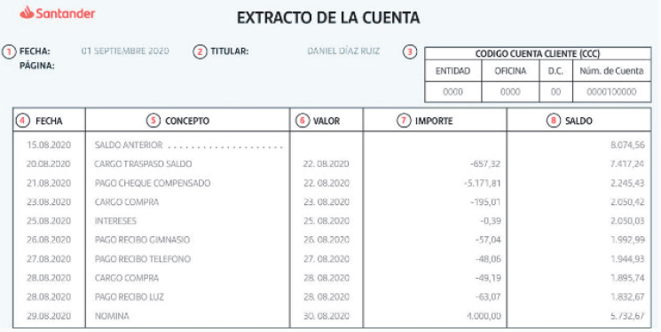

Extracto Bancario
- Informe periódico de los movimientos realizados del saldo disponible de nuestra cuenta bancaria.
- Se puede consultar también por Internet, a través de la banca on-line.
- Es conveniente verificar todas las operaciones registradas, por lo que es necesario conservar todos los justificantes, tickets, recibos de ingresos y pagos... para su posterior arqueo.
- En ocasiones o descuidos las cuentas pueden presentar saldo negativo o descubierto (números rojos): deuda con el banco que genera un coste (pago de intereses).

1. Fecha: fecha de expedición del contrato.
2. Titular: datos indentificativos del titular de la cuenta.
3. Código cuenta cliente: número de cuenta.
4. Fecha: fecha en la que tiene lugar el movimiento, el primero siempre es el saldo inicial y a continuación se detallan las operaciones.
5. Concepto: breve descripción de la operación.
6. Valor: fecha a partir de la cual se devengan intereses.
7. Importe: cantidad de dinero cargada( salida de dinero, anotación negativa) o abonada (entrada de dinero, anotación positiva).
8. Saldo: diferencia entre las entradas y salidas de dinero.